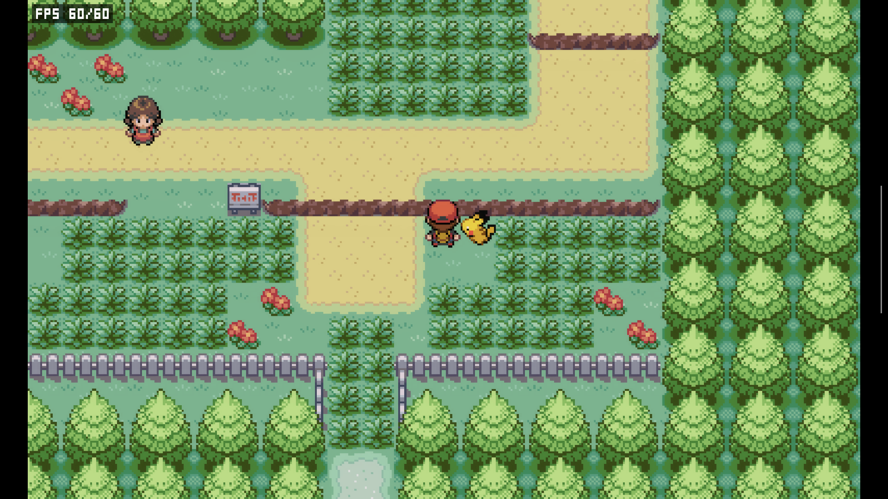
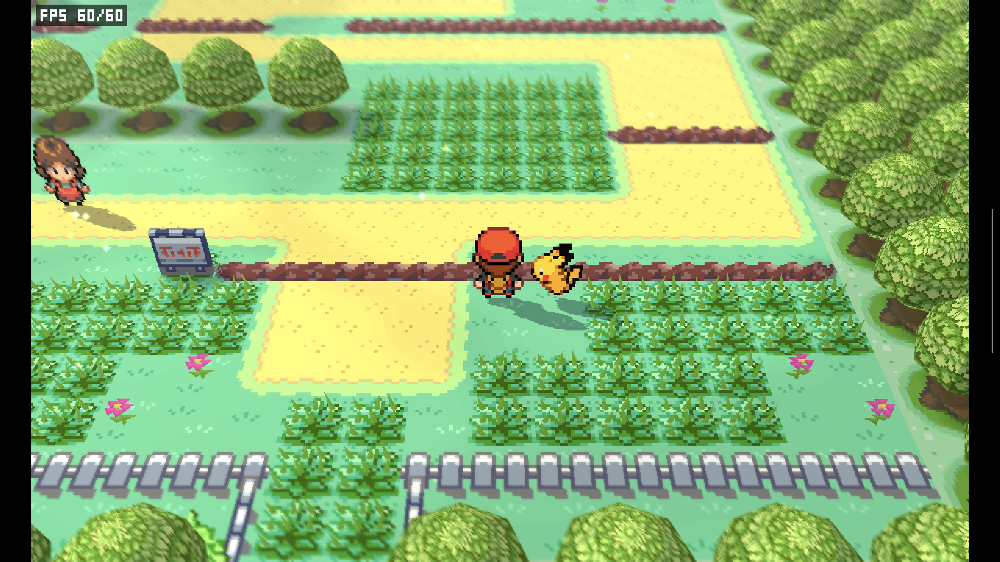
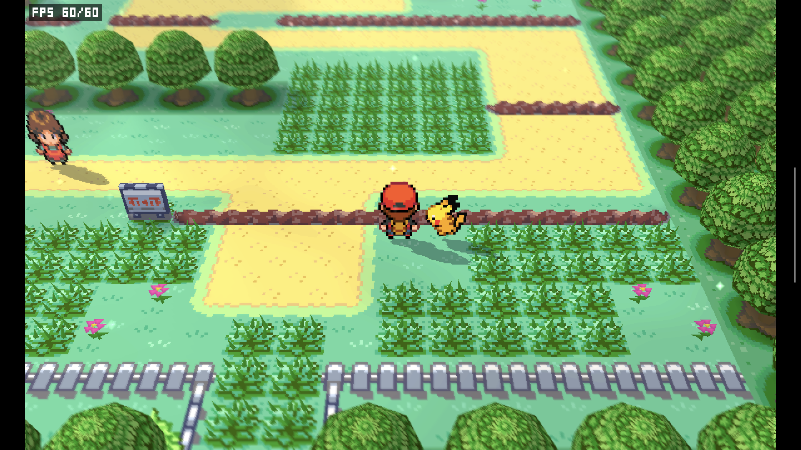
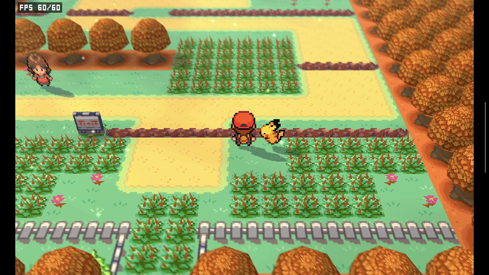
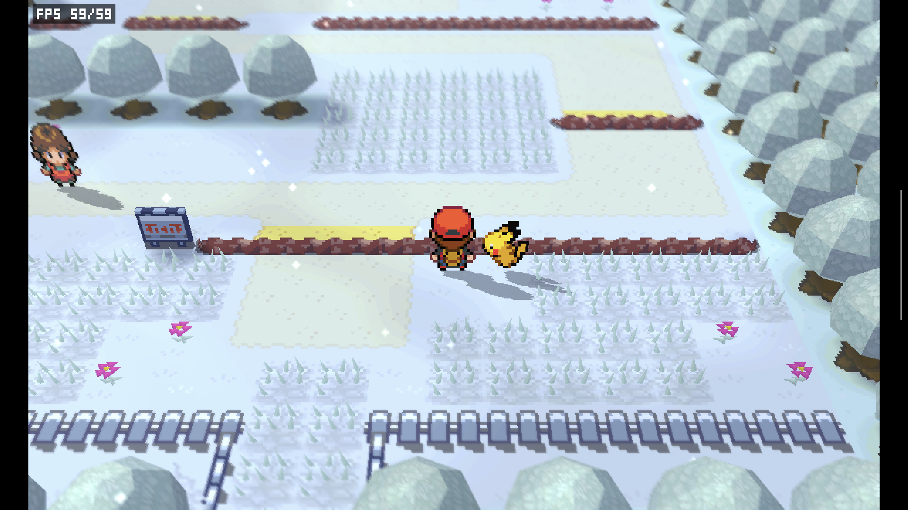
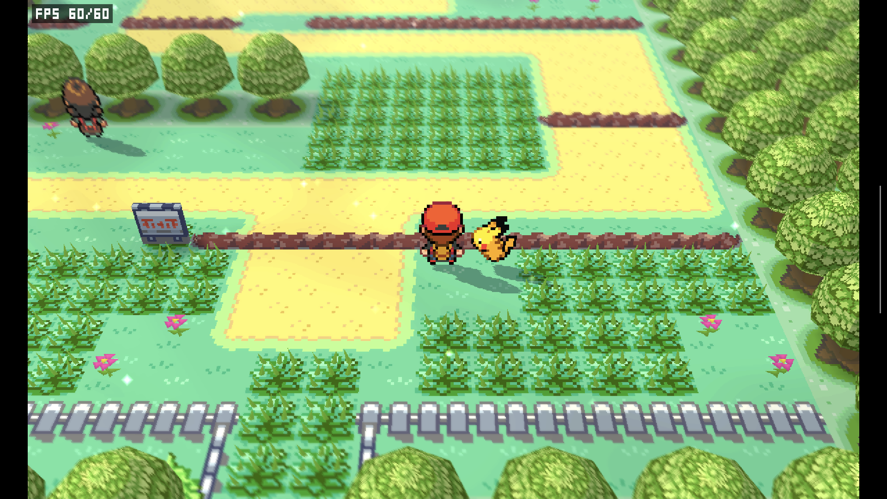
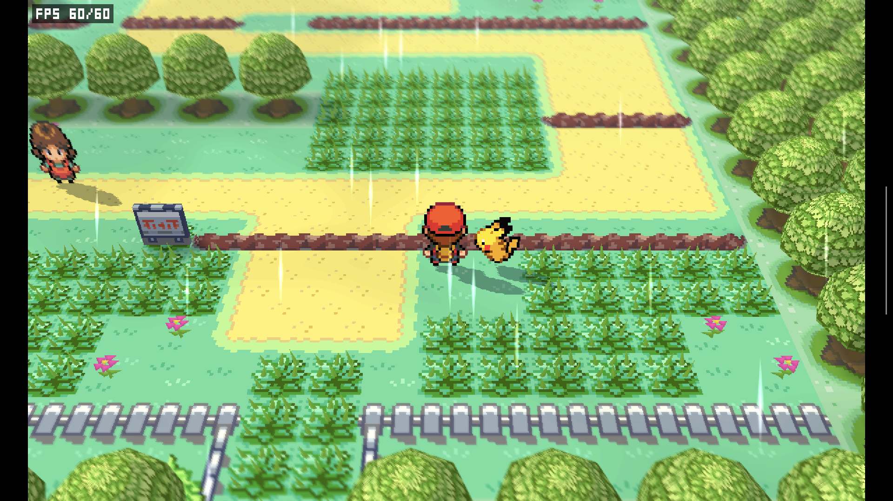
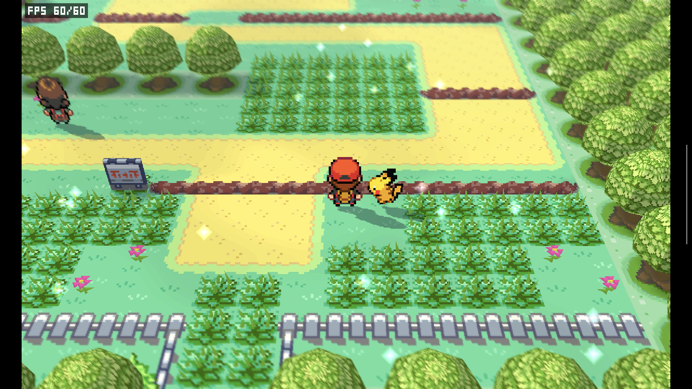
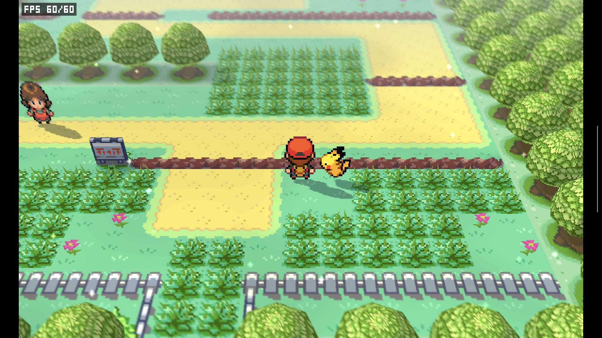
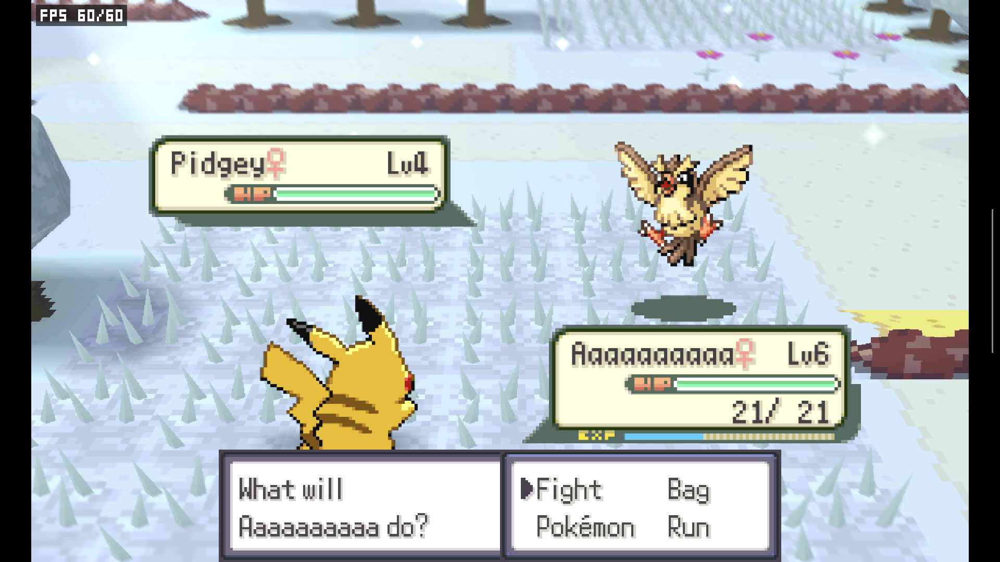

Historical failed candidate. This v3 preview was superseded by the passing v5 release. Current native downloads and test results.
Back to verified gallery
Classic v3 candidate — unreleased
Classic’s v3 candidate remains unreleased: field and automatic-climate samples reached 59.5 FPS, below the 59.6 FPS release gate. Its scenery and interaction checks passed, but the previously qualified v2 download remains in place.
These are actual Thor captures of the held candidate, not screenshots of the public v2 download. Environmental coverage remains incomplete. Screenshots show appearance; measured pacing is documented in the test report.

2d — unreleased candidate3d — unreleased candidate
spring — unreleased candidate
summer — unreleased candidate
autumn — unreleased candidate
winter — unreleased candidate
clear — unreleased candidate
rain — unreleased candidate
snow — unreleased candidate
fog — unreleased candidate
battle — unreleased candidateView 2D/3D screenshotssolid-motion — unreleased candidateView 2D/3D screenshotswinter-ground — unreleased candidateView 2D/3D screenshotscut-tree — unreleased candidateView 2D/3D screenshotsboulder-moving — unreleased candidateView 2D/3D screenshotsrock-smash — unreleased candidateView 2D/3D screenshotsbattle — unreleased candidateView 2D/3D screenshotsrain — unreleased candidateView 2D/3D screenshotssnow — unreleased candidateView 2D/3D screenshotsfog — unreleased candidateSource 146f859a58b1bd4c50001a6994d5b1462b89c900. Media checksums and status.